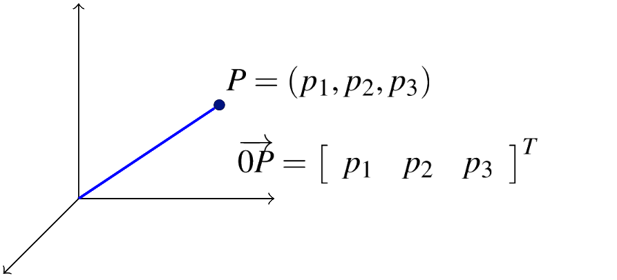
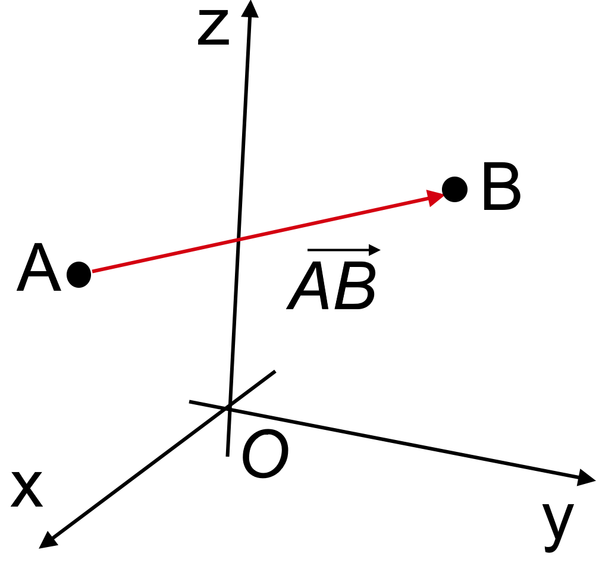

Vectors in \(\mathbb{R}^n\)#
A scalar quantity has only magnitude. Examples: time, temp, distance, speed,…
A vector quantity has both magnitude and direction. Examples: displacement, velocity, force,…
An ordered sequence \((a_1 , a_2 , \ldots, a_n )\) of real numbers is an ordered n-tuple. Two ordered n-tuple are equal if and only if corresponding entries are the same. In other words,
if and only if
The notation \(\mathbb{R}^n\) refers to a collection of ordered lists of \(n\) real numbers, that is
In particular, for various values of \(n\) we have,
\(n=1\): \(\mathbb{R}=\mathbb{R}^1 =\left\{x_1:~x_1 \in \mathbb{R}\right\}\). Examples: \(1\), \(\sqrt{2}\), \(\frac{3}{2}\),…are points in \(\mathbb{R}\).
\(n=2\): \(\mathbb{R}^2 =\left\{ (x_1,x_2 ):~x_1,x_2 \in \mathbb{R}\right\}\). Examples: \((1,2)\), \((\sqrt{2},2)\), \(\left(\frac{3}{2},0\right)\),…are points in \(\mathbb{R}^2.\)
\(n=3\): \(\mathbb{R}^3 =\left\{ (x_1,x_2,x_3 ):~x_1,x_2,x_3 \in \mathbb{R}\right\}\). Examples: \((1,2,3)\), \((\sqrt{2},2,1)\), \(\left(\frac{3}{2},0,\sqrt{5}\right)\),…are points in \(\mathbb{R}^3\).
If \(\mathbb{R}^n =\left\{ (x_1,\ldots,x_n ):~x_j \in \mathbb{R}~\text{for}~j = 1,\ldots ,n\right\}\), then
is called a vector.
Each number \(x_j\) from vector \(\vec{x}\) is called the components of \(\vec{x}\). Vectors have both size (magnitude) and direction.
Vectors can be written in either column vector form or \textbf{row vector} form
Sometimes a column vector in \(\mathbb{R}^n\) is written in forms of \(\begin{bmatrix} u_1 & \dots & u_n \\ \end{bmatrix}^T\).
The origin is a point given by \(0 = (0,\ldots ,0)\).
A vector that represents the position of a point in a space with respect to the origin is called the position vector. Let \(P = (p_1 ,\ldots,p_n )\) be the coordinates of a point in \(\mathbb{R}^n\) . Then the vector \(\overrightarrow{0P}\) with its tail at \(0 =(0,\ldots ,0)\) (the origin) and its tip at \(P\) is called the position vector of the point \(P\). We write
This definition is illustrated in the following picture for the special case of \(\mathbb{R}^3\)
{kind=link}
We can also determine the position vector from \(P\) to \(Q\) (the vector from \(P\) to \(Q\)) as follows
where \(P = (p_1 ,\ldots,p_n )\) and \(Q = (q_1 ,\ldots,q_n )\).
{kind=link}
Refrences
Kuttler, Kenneth. “A First Course in Linear Algebra (Lyryx).” (2018).
Nicholson, W. Keith. “Linear Algebra with Applications (Lyryx).” (2018).